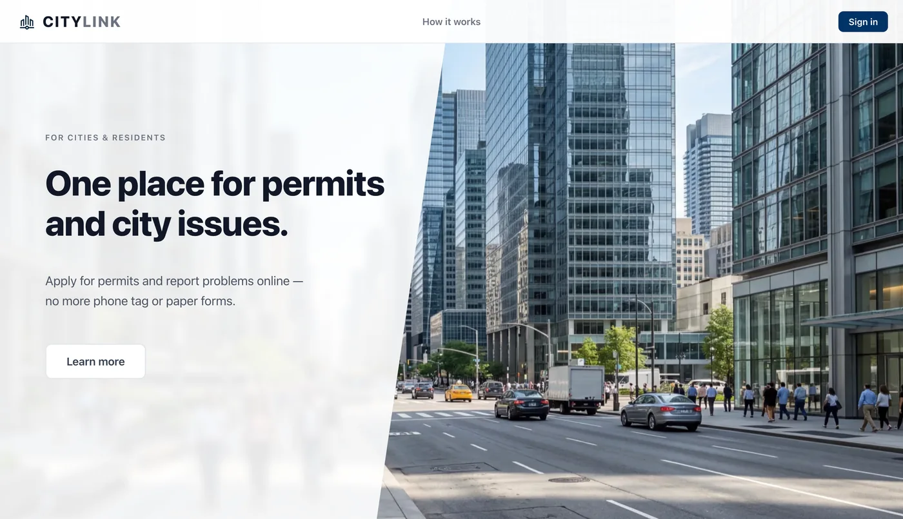

How does a resident request become work a county can act on?
CityLink brings filing, screening, and review into one service. Residents can follow a request while county staff work through the applications and reports that need their attention.
My contribution
I lead CityLink development, including permit and code-enforcement workflows and the migration of legacy records into searchable data.
CityLink is a SingularX product. My contribution is engineering and technical leadership.
From a request to a review.
01 · Give residents a place to start.
The public entry point introduces permitting and code-enforcement services, with access to the resident and staff workspaces.
The image shows the public landing page; the workspaces require sign-in.
02 · Surface incomplete applications.
Screening helps identify missing information before an application moves through staff review.
Incomplete submissions need to be visible before they consume review time.
03 · Connect the request to staff work.
County workflows connect permit and code-enforcement requests with review and status communication.
CityLink is launch-ready. Its public site introduces the service, while the workspaces require sign-in.

Project links & details
React · Node.js · Express.js